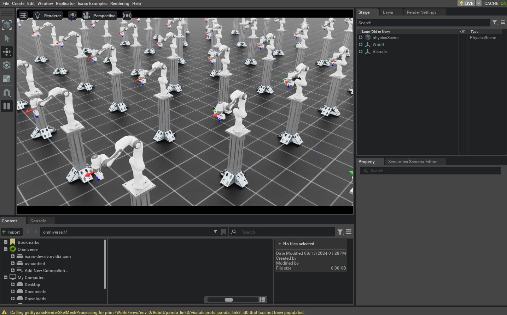

前面的教程主要在 Joint Space 中控制 Robot。在许多应用中，直接指定末端执行器的目标 Pose 更直观，例如遥操作场景；此时可以使用 Task-Space Controller，而不必逐个给出关节目标位置。
本教程使用 controllers.DifferentialIKController 跟踪末端执行器的目标 Pose，介绍 Differential IK Controller 的基本用法。
1 代码
本教程对应 run_diff_ik.py，位于 scripts/tutorials/05_controllers 目录。
代码 run_diff_ik.py
# Copyright (c) 2022-2026, The Isaac Lab Project Developers (https://github.com/isaac-sim/IsaacLab/blob/main/CONTRIBUTORS.md).
# All rights reserved.
#
# SPDX-License-Identifier: BSD-3-Clause
"""
This script demonstrates how to use the differential inverse kinematics controller with the simulator.
The differential IK controller can be configured in different modes. It uses the Jacobians computed by
PhysX. This helps perform parallelized computation of the inverse kinematics.
.. code-block:: bash
# Usage
./isaaclab.sh -p scripts/tutorials/05_controllers/run_diff_ik.py
"""
"""Launch Isaac Sim Simulator first."""
import argparse
from isaaclab.app import AppLauncher
# add argparse arguments
parser = argparse.ArgumentParser(description="Tutorial on using the differential IK controller.")
parser.add_argument("--robot", type=str, default="franka_panda", help="Name of the robot.")
parser.add_argument("--num_envs", type=int, default=128, help="Number of environments to spawn.")
# append AppLauncher cli args
AppLauncher.add_app_launcher_args(parser)
# parse the arguments
args_cli = parser.parse_args()
# launch omniverse app
app_launcher = AppLauncher(args_cli)
simulation_app = app_launcher.app
"""Rest everything follows."""
import torch
import isaaclab.sim as sim_utils
from isaaclab.assets import AssetBaseCfg
from isaaclab.controllers import DifferentialIKController, DifferentialIKControllerCfg
from isaaclab.managers import SceneEntityCfg
from isaaclab.markers import VisualizationMarkers
from isaaclab.markers.config import FRAME_MARKER_CFG
from isaaclab.scene import InteractiveScene, InteractiveSceneCfg
from isaaclab.utils import configclass
from isaaclab.utils.assets import ISAAC_NUCLEUS_DIR
from isaaclab.utils.math import subtract_frame_transforms
##
# Pre-defined configs
##
from isaaclab_assets import FRANKA_PANDA_HIGH_PD_CFG, UR10_CFG # isort:skip
@configclass
class TableTopSceneCfg(InteractiveSceneCfg):
"""Configuration for a cart-pole scene."""
# ground plane
ground = AssetBaseCfg(
prim_path="/World/defaultGroundPlane",
spawn=sim_utils.GroundPlaneCfg(),
init_state=AssetBaseCfg.InitialStateCfg(pos=(0.0, 0.0, -1.05)),
)
# lights
dome_light = AssetBaseCfg(
prim_path="/World/Light", spawn=sim_utils.DomeLightCfg(intensity=3000.0, color=(0.75, 0.75, 0.75))
)
# mount
table = AssetBaseCfg(
prim_path="{ENV_REGEX_NS}/Table",
spawn=sim_utils.UsdFileCfg(
usd_path=f"{ISAAC_NUCLEUS_DIR}/Props/Mounts/Stand/stand_instanceable.usd", scale=(2.0, 2.0, 2.0)
),
)
# articulation
if args_cli.robot == "franka_panda":
robot = FRANKA_PANDA_HIGH_PD_CFG.replace(prim_path="{ENV_REGEX_NS}/Robot")
elif args_cli.robot == "ur10":
robot = UR10_CFG.replace(prim_path="{ENV_REGEX_NS}/Robot")
else:
raise ValueError(f"Robot {args_cli.robot} is not supported. Valid: franka_panda, ur10")
def run_simulator(sim: sim_utils.SimulationContext, scene: InteractiveScene):
"""Runs the simulation loop."""
# Extract scene entities
# note: we only do this here for readability.
robot = scene["robot"]
# Create controller
diff_ik_cfg = DifferentialIKControllerCfg(command_type="pose", use_relative_mode=False, ik_method="dls")
diff_ik_controller = DifferentialIKController(diff_ik_cfg, num_envs=scene.num_envs, device=sim.device)
# Markers
frame_marker_cfg = FRAME_MARKER_CFG.copy()
frame_marker_cfg.markers["frame"].scale = (0.1, 0.1, 0.1)
ee_marker = VisualizationMarkers(frame_marker_cfg.replace(prim_path="/Visuals/ee_current"))
goal_marker = VisualizationMarkers(frame_marker_cfg.replace(prim_path="/Visuals/ee_goal"))
# Define goals for the arm
ee_goals = [
[0.5, 0.5, 0.7, 0.707, 0, 0.707, 0],
[0.5, -0.4, 0.6, 0.707, 0.707, 0.0, 0.0],
[0.5, 0, 0.5, 0.0, 1.0, 0.0, 0.0],
]
ee_goals = torch.tensor(ee_goals, device=sim.device)
# Track the given command
current_goal_idx = 0
# Create buffers to store actions
ik_commands = torch.zeros(scene.num_envs, diff_ik_controller.action_dim, device=robot.device)
ik_commands[:] = ee_goals[current_goal_idx]
# Specify robot-specific parameters
if args_cli.robot == "franka_panda":
robot_entity_cfg = SceneEntityCfg("robot", joint_names=["panda_joint.*"], body_names=["panda_hand"])
elif args_cli.robot == "ur10":
robot_entity_cfg = SceneEntityCfg("robot", joint_names=[".*"], body_names=["ee_link"])
else:
raise ValueError(f"Robot {args_cli.robot} is not supported. Valid: franka_panda, ur10")
# Resolving the scene entities
robot_entity_cfg.resolve(scene)
# Obtain the frame index of the end-effector
# For a fixed base robot, the frame index is one less than the body index. This is because
# the root body is not included in the returned Jacobians.
if robot.is_fixed_base:
ee_jacobi_idx = robot_entity_cfg.body_ids[0] - 1
else:
ee_jacobi_idx = robot_entity_cfg.body_ids[0]
# Define simulation stepping
sim_dt = sim.get_physics_dt()
count = 0
# Simulation loop
while simulation_app.is_running():
# reset
if count % 150 == 0:
# reset time
count = 0
# reset joint state
joint_pos = robot.data.default_joint_pos.clone()
joint_vel = robot.data.default_joint_vel.clone()
robot.write_joint_state_to_sim(joint_pos, joint_vel)
robot.reset()
# reset actions
ik_commands[:] = ee_goals[current_goal_idx]
joint_pos_des = joint_pos[:, robot_entity_cfg.joint_ids].clone()
# reset controller
diff_ik_controller.reset()
diff_ik_controller.set_command(ik_commands)
# change goal
current_goal_idx = (current_goal_idx + 1) % len(ee_goals)
else:
# obtain quantities from simulation
jacobian = robot.root_physx_view.get_jacobians()[:, ee_jacobi_idx, :, robot_entity_cfg.joint_ids]
ee_pose_w = robot.data.body_pose_w[:, robot_entity_cfg.body_ids[0]]
root_pose_w = robot.data.root_pose_w
joint_pos = robot.data.joint_pos[:, robot_entity_cfg.joint_ids]
# compute frame in root frame
ee_pos_b, ee_quat_b = subtract_frame_transforms(
root_pose_w[:, 0:3], root_pose_w[:, 3:7], ee_pose_w[:, 0:3], ee_pose_w[:, 3:7]
)
# compute the joint commands
joint_pos_des = diff_ik_controller.compute(ee_pos_b, ee_quat_b, jacobian, joint_pos)
# apply actions
robot.set_joint_position_target(joint_pos_des, joint_ids=robot_entity_cfg.joint_ids)
scene.write_data_to_sim()
# perform step
sim.step()
# update sim-time
count += 1
# update buffers
scene.update(sim_dt)
# obtain quantities from simulation
ee_pose_w = robot.data.body_state_w[:, robot_entity_cfg.body_ids[0], 0:7]
# update marker positions
ee_marker.visualize(ee_pose_w[:, 0:3], ee_pose_w[:, 3:7])
goal_marker.visualize(ik_commands[:, 0:3] + scene.env_origins, ik_commands[:, 3:7])
def main():
"""Main function."""
# Load kit helper
sim_cfg = sim_utils.SimulationCfg(dt=0.01, device=args_cli.device)
sim = sim_utils.SimulationContext(sim_cfg)
# Set main camera
sim.set_camera_view([2.5, 2.5, 2.5], [0.0, 0.0, 0.0])
# Design scene
scene_cfg = TableTopSceneCfg(num_envs=args_cli.num_envs, env_spacing=2.0)
scene = InteractiveScene(scene_cfg)
# Play the simulator
sim.reset()
# Now we are ready!
print("[INFO]: Setup complete...")
# Run the simulator
run_simulator(sim, scene)
if __name__ == "__main__":
# run the main function
main()
# close sim app
simulation_app.close()
2 代码解析
使用 Task-Space Controller 时，必须确保所有输入量都使用正确的 Coordinate Frame。并行 Environment 共处于同一个 Simulation World Frame，但通常希望每个 Environment 都拥有自己的 Local Frame；其 Origin 可通过 scene.InteractiveScene.env_origins 获取。
Isaac Lab API 使用以下 Frame 记号：
Simulation 世界坐标系（表示为
w），这是整个Simulation的框架。本地Environment帧（表示为
e），即本地Environment的帧。Robot 的基础框架（表示为
b），这是 Robot 基础链接的框架。
Asset 不感知 Environment Local Frame，因此返回的状态都位于 Simulation World Frame。使用这些状态前，需要减去对应的 Environment Origin，将其转换到 Environment Local Frame。
2.1 创建 IK Controller
DifferentialIKController 根据目标末端执行器 Pose 计算 Robot 所需的关节 Position。该实现使用 PyTorch 批量计算，支持 Damped Least Squares、Pseudo-Inverse 等 IK Solver，可通过 ik_method 选择；Command 既可以是相对 Pose，也可以是绝对 Pose。
本教程使用 Damped Least Squares 计算关节 Position，并用 Absolute Pose Command 跟踪目标末端执行器 Pose。
# Create controller
diff_ik_cfg = DifferentialIKControllerCfg(command_type="pose", use_relative_mode=False, ik_method="dls")
diff_ik_controller = DifferentialIKController(diff_ik_cfg, num_envs=scene.num_envs, device=sim.device)
2.2 获取 Robot 的关节与刚体索引
IK Controller 只负责计算，因此需要用户提供 Robot 的关节 Position、当前末端执行器 Pose 和 Jacobian Matrix。
assets.ArticulationData.joint_pos 包含全部关节，但这里只需要机械臂关节，不需要 Gripper；assets.ArticulationData.body_state_w 包含全部刚体状态，而这里只需要末端执行器。因此必须先取得相应索引。
Articulation 提供 find_joints() 和 find_bodies()，可根据关节或刚体名称返回对应索引。
也可以直接调用上述 Method，但更推荐使用 SceneEntityCfg 解析索引。该 Class 在内部调用这些 Method，并额外检查名称是否有效，因此更安全。
# Specify robot-specific parameters
if args_cli.robot == "franka_panda":
robot_entity_cfg = SceneEntityCfg("robot", joint_names=["panda_joint.*"], body_names=["panda_hand"])
elif args_cli.robot == "ur10":
robot_entity_cfg = SceneEntityCfg("robot", joint_names=[".*"], body_names=["ee_link"])
else:
raise ValueError(f"Robot {args_cli.robot} is not supported. Valid: franka_panda, ur10")
# Resolving the scene entities
robot_entity_cfg.resolve(scene)
# Obtain the frame index of the end-effector
# For a fixed base robot, the frame index is one less than the body index. This is because
# the root body is not included in the returned Jacobians.
if robot.is_fixed_base:
ee_jacobi_idx = robot_entity_cfg.body_ids[0] - 1
else:
ee_jacobi_idx = robot_entity_cfg.body_ids[0]
2.3 计算 Robot Command
IK Controller 将设置目标 Command 与计算关节 Position 分开，使 Controller 可以按不同于 Robot 控制频率的频率运行。
set_command() 接收批量形式的目标末端执行器 Pose，该 Pose 位于 Robot Base Frame。
# reset controller
diff_ik_controller.reset()
diff_ik_controller.set_command(ik_commands)
compute() 根据当前末端执行器 Pose、Jacobian 和关节 Position 计算目标关节 Position。Jacobian 从 Robot 数据中读取，其值由 Physics Engine 计算。
# obtain quantities from simulation
jacobian = robot.root_physx_view.get_jacobians()[:, ee_jacobi_idx, :, robot_entity_cfg.joint_ids]
ee_pose_w = robot.data.body_pose_w[:, robot_entity_cfg.body_ids[0]]
root_pose_w = robot.data.root_pose_w
joint_pos = robot.data.joint_pos[:, robot_entity_cfg.joint_ids]
# compute frame in root frame
ee_pos_b, ee_quat_b = subtract_frame_transforms(
root_pose_w[:, 0:3], root_pose_w[:, 3:7], ee_pose_w[:, 0:3], ee_pose_w[:, 3:7]
)
# compute the joint commands
joint_pos_des = diff_ik_controller.compute(ee_pos_b, ee_quat_b, jacobian, joint_pos)
最后，按照前面教程中的方式把计算得到的关节 Position 目标发送给 Robot。
# apply actions
robot.set_joint_position_target(joint_pos_des, joint_ids=robot_entity_cfg.joint_ids)
scene.write_data_to_sim()
3 代码执行
现在我们已经完成了代码，让我们运行 Script 并查看结果：
./isaaclab.sh -p scripts/tutorials/05_controllers/run_diff_ik.py --robot franka_panda --num_envs 128
Script 将以 128 Robots 开始 Simulation。 Robots 将使用 IK Controller 进行控制。 应使用帧标记显示当前和所需的末端执行器 Poses。当Robot达到 所需的 Pose，Command 应循环到 Script 中指定的下一个 Pose。

要停止 Simulation，您可以关闭窗口，或按 Ctrl+C 在 Terminal 中。